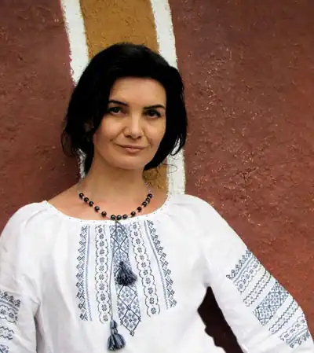
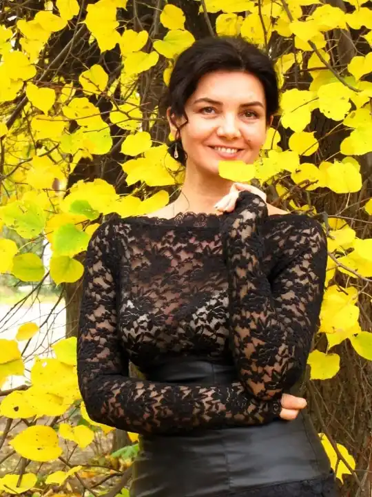

Народилася 30 березня 1973 року на Львівщині у родині вчителів.
Дитинство пройшло на рідній для батьків Черкащині. Там же закінчила Уманський державний педагогічний іститут (нині університет) імені П. Тичини. Після кількох років учителювання стає у ньому викладачем. Кандидат педагогічних наук, доцент.
Лауреат більше десятка всеукраїнських і міжнародних літературних конкурсів, таких, як тім "Гранослова", "Смолоскип", "Коронація слова". Автор поетичних збірок "Бузкові зошити" (1997) та "Чар-папороть" (2002); збірки "дорослих" оповідань "Як дожити до ста" (2004); повісті-казки "Домовичок з палітрою" (2001), казок "Півтора бажання" (2004), дитячої повісті "Русалонька із 7-В, або Прокляття роду Кулаківських" (2005); монографії "Тичининська формула українського патріотизму" (2002), методичних рекомендацій "У країні Лісових Дзвіночків"(2002). Упорядник спогадів про Павла Тичину "З любов’ ю і болем" (2005). Член Національної спілки письменників Укрїни. Лауреат літературної премії "Благовіст", недержавної українсько-німецької премії імені О. Гончара й літературної премії імені М. Чабанівського. Упорядник спогадів про Павла Тичину "З любов’ю і болем" (2005). Має багато публікацій у періодичній пресі, мистецьких часописах ("Березіль", "Кальміюс", "Дзвін", в тім числі у тих, що видаються за кордоном: вірменському – "Гарун", в італійському – "Артекультура", в німецькій "Соборності"), альманахах та колективних збірниках. З 1997 року член Національної Спілки письменників України. Основні твори: книжки поезій: "Бузкові зошити" (1997), "Чар-папороть" (2002), "Душа осики" (2006)книжки "дорослих" оповідань "Як дожити до ста" (2004), удостоєної Міжнародної недержавної україно-німецької премії імені Олеся Гончараромани для підлітків "Русалонька із 7-В або Прокляття роду Кулаківських" (2005) (ця книжка разом зі збіркою "Як дожити до ста" удостоєна премії ім. Михайла Чабанівського 2006 року) й "Русалонька із 7-В та Загублений у часі" (2007)книги казки "Півтора бажання (Казки старої Ялосоветиної скрині)" (2007) та "Домовичок із палітрою" (2007)